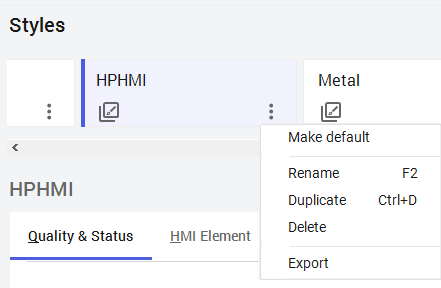

Styles management panel showing Standard_Style listed as the default style card, with add, delete, and vertical ellipsis (import/export options) buttons in the top action bar
Module 3 — Symbols | Pages 277–280
Alarm Element Styles Alarm Element styles define the visual appearance of alarm severity, alarm states, and user acknowledgment. The four severities are color coded as: Red - Critical Yellow - High Cyan - Medium Magenta - Low The visual indicators also includes three states of these severities: ACK - acknowledged but in alarm RTN - return to normal but unacknowledged UNACK - unacknowledged and in alarm The Alarm Element styles also include alarm border styles in the form of visual outlines. Trend Element Styles Trend Element styles support the SA_SinglePen and SA_MultiTrendPen symbols found in the Situation Awareness Library. User defined Styles This list provides 24 user-customizable styles. Format Styles Format styles are used to provide visual overrides for numerical values displayed in the InTouchViewApp. These styles allow overriding the format of value range, fixed width, and precision for each numerical value. This allows standardization across the InTouchViewApp for the display of numbers. The list also contains 25 user-defined format styles.
Manage Style List In the top-right of the Styles area, buttons are available for adding and deleting style cards, as well as displaying a menu of options for importing and exporting style cards. Add or Delete a Style Card You can add new Style card to the list of styles by clicking the Add button. The card that is selected when you click Add is duplicated with a incremented name and a copy of all styles from the selected card. The new card can be renamed and edited. You can delete a card by selecting a card and clicking the Delete button.
Import and Export Style Cards The Configure Styles area provides a menu for importing one or more styles and for exporting all styles. In the top-right of the Configure Styles area, click the vertical ellipsis to display the menu. Import allows you to import one or more styles. Additional styles are available in the product installation path: C:\Program Files (x86)\ArchestrA\FrameWork\Bin\AdditionalElementStyles This folder contains a list of XML files which may be imported for use in your Galaxy. Export All allows you to export all of the style cards from the list. The export file format is XML type. Manage Style Cards Each style card allows you to make default, rename, duplicate, delete, and export that style. In the bottom-right of a card, click the vertical ellipsis to display a menu of options. Make default activates the selected style card for the Galaxy. Only one style card can be active (default) in the Galaxy at a time. Rename allows you to rename the selected style card. Alternatively, you can click the title of the card to make the title editable or select a card and press F2. Duplicate makes a copy of the selected style card. Alternatively, you can select a card and press Ctrl+D. Delete allows you to delete the selected style card. Export allows you to export the selected style card.


Review the sections above for the main topics, step-by-step procedures, and important configuration details.
This is part of the InTouch HMI layer, which integrates with Application Server's Galaxy for a complete visualization solution.
Module 3 — Symbols. AVEVA InTouch for System Platform 2023 Training.
Next: Lesson L23 — Widgets Overview + Lab 11